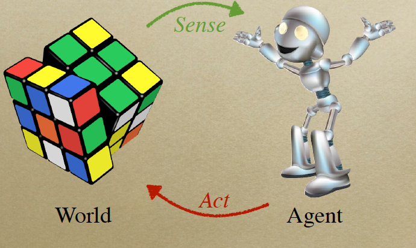
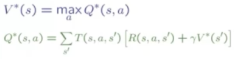
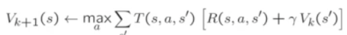
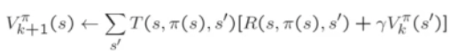
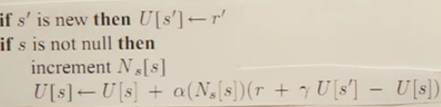
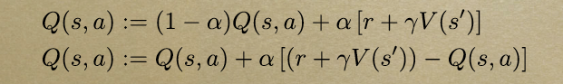

Back To Basics - Review notes on Robot Software Architecture Course

As the above picture shows, the robot senses the world from its sensor, and then do some actions to the world. We can typically think of the world as a Map too make it not too abstract.
When dealing with robotics, we need to deal with uncerntainty and nosiy, for example, when you asked robot to turn left 90 degree, it could just turn about 85 degree, we called it having noisy, or maybe robot didn't move at all due to mechanic problems and the sensor is not perfect either, so we need to add the noisy to that too. Therefore, we need to take the nosiy into account when we are creating the model for it.
Bayesian Localisation
Assume the robot doesn't know its location, and then wants to localise himself in the world(e.g map), here we have some landmarks in the map that robot can sense via its sensor. It has two updates: Motion Update and Observation Update.
- Bayes Rule: P(S|O) = P(O|S) * P(S) / P(O) == likelihood * prior / evidence. Here S means state, O means observation.
- Kalman Filter: It is a special case of a Bayes’ filter with dynamics model and sensory model being linear Gaussian.
- Extended Kalman Filter: When the sensory model is nonlinear, then we may use this filter to make it like linear.
- Particle Filter:
Note:Here is a nice rundown article with regard to these filters, and here are three series on understanding the Extended Kalman Filter (EKF.): PartI, PartII and PartIII.
Search
Search Problem is just model. Firstly, we map the problem to Search problem into following properties: States, Actions, Successor Function and Goal test. Below are some Search Algorithms(b denotes the branching factor, m denotes the tree's depth for the time complexity and space complexity):
- Depth-First Search: Takes time O(bm ), Spaces that fringe take O(bm)
- Breath-First Search: Takes time O(bm ), Spaces that fringe take O(bm )
- Uniform Cost Search: This one is typically used in the weighted tree. Strategy: expand a cheapest node first. Fringe is a priority queue(priority: cumulative cost)
- A* Search: The priority queue is ordered by f(n) = g(n) + h(n). Here the g(n) denotes the cost that already took, the h(n) means the hurestic cost to the goal. This algorithm is a cornerstone of search, and has been used in a lot of fields.
Graph Search
Idea: never expand a state twice
Implementation:
- Tree search + a set of expanded states ("closed set")
- Expand the search tree node-by-node, but...
- Before expanding a node, check to make sure its state is new
- if not new, skip it
In above algorithms, we are always dealing with deterministic situation, for cases involved non-determinisc (stochastic), we will use the Markov Decision Process(aka MDP).
Markov Decision Processes
MDP is used to find a optimal way in the non-deterministic(stochastic) search area. It uses the Bellman Equation to do the calculation.

Here is the denotation that we used in the formula: S -> state, R -> Reward, A -> Action, O -> Obersavation, T -> Transition Function.
- Value Iteration: The formulation is as following: 
- Policy Iteration: The formulation is as following: 
- Prioritized-Sweeping:
Use a Priority Queue to update nodes in a smart order, on each update, track |ΔV|, and add it to the priority of all upstream states. Reset priority to 0 when a node is pulled from the queue and updated.
MDP applies to the fully observable, POMDP technique applies to the Partical Observal case. In both MDP and POMDP we assume that we know the Transition function (T) and Reward Function (R), in the cases that we don't know them, it will lead to the next section, Reinforcement Learning.
Reinforcement Learning
Because we don't have the T and R function, we can use the following techniques:
-

Q-Learning (aka. Model free technique)

Optimisation
- Gradient Descent
- Function Approximation
- Downhill Simplex Algorithm
- Powell's Method (Conjugate Gradient)
Planning
- State space planning
- Plan space planning
Summary
Above is a list of bulletins that were taught in this course, guess it is a bit hard for others to follow due to its simplicity, most likely it is for myself use. :)